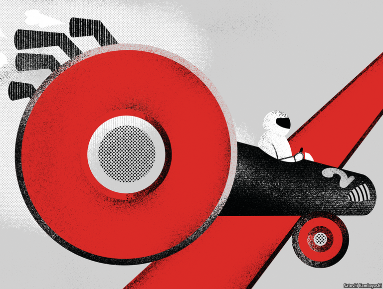

2021-04-06T15:12:47+00:00
Inflation expectations
通胀预期
通脹預期
A different kind of fluke
另一种锚
另一種錨
Just how anchored are America’s inflation expectations?
美国的通胀预期有多稳固？
美國的通脹預期有多穩固？

SINCE DEMOCRATS proposed a $1.9trn fiscal stimulus in January, hawks have warned that America’s economy might overheat. With cheques for $1,400 now landing in bank accounts, President Joe Biden reportedly considering spending another $3trn on infrastructure and the Federal Reserve showing no sign of putting the brakes on the rebound from the pandemic, the predictions of impending doom are getting louder. The latest was delivered by Larry Summers, a former treasury secretary, on March 20th. Mr Summers sees it as more likely than not that the economy will suffer either from an inflation surge or from the crushing effects of higher interest rates. America, he says, has the least responsible economic policy in 40 years.
自民主党在1月提出1.9万亿美元的财政刺激方案以来，鹰派就警告美国经济可能过热。现在每人1400美元的支票陆续到账，据称总统拜登正在考虑再推出三万亿美元的基建计划，而美联储也没有释放出要对疫情后的经济反弹踩刹车的信号，预测末日即将降临的声音越来越响亮。最近发声的是前财政部长拉里·萨默斯，他在3月20日预测经济有过半概率要承受通胀飙升，或利率上升带来的破坏效应。他说，美国现在施行的是40年来最不负责任的经济政策。
自民主黨在1月提出1.9萬億美元的財政刺激方案以來，鷹派就警告美國經濟可能過熱。現在每人1400美元的支票陸續到賬，據稱總統拜登正在考慮再推出三萬億美元的基建計劃，而美聯儲也沒有釋放出要對疫情後的經濟反彈踩剎車的信號，預測末日即將降臨的聲音越來越響亮。最近發聲的是前財政部長拉里·薩默斯，他在3月20日預測經濟有過半概率要承受通脹飆升，或利率上升帶來的破壞效應。他說，美國現在施行的是40年來最不負責任的經濟政策。
The worst-case scenario painted by inflation hawks can be broken into stages. First, inflation will soon rise mechanically as numbers from the spring of 2020, when the economy and commodity prices slumped, fall out of comparisons with a year earlier. On that everyone agrees.
通胀鹰派所描绘的最坏情况可以分为几个阶段。首先，通胀自然很快就会上升，因为2020年春季经济下滑、大宗商品价格暴跌，导致经济数据同比大幅下降。对于这一点各方并无异议。
通脹鷹派所描繪的最壞情況可以分為幾個階段。首先，通脹自然很快就會上升，因為2020年春季經濟下滑、大宗商品價格暴跌，導致經濟數據同比大幅下降。對於這一點各方並無異議。
The next phase is a second wave of inflation as spending by newly vaccinated consumers rebounds from the pandemic faster than production can keep up. Even stimulus advocates typically admit that overheating is a risk, and it would be more likely should more deficit spending pass. Mr Biden may unveil the spending side of his infrastructure bill alongside his preliminary annual budget proposals for government departments, which are due next week. Whereas some of any Biden infrastructure bill may be paid for by raising taxes, it seems unlikely that Congress would raise $3trn this way, rather than relying on at least some extra borrowing.
第二阶段，接种了疫苗的消费者的支出在疫情后迅速反弹，而生产无法跟上，就会出现第二波通胀。就连刺激措施的拥护者一般也都承认过热是一种风险，而如果国会通过更多赤字支出提案，过热的几率就更大。拜登将于下周宣布政府部门的初步财年预算案，届时可能会公布他的基建刺激提案的支出安排。尽管这项基建提案中的一部分资金可能会通过提高税收来筹措，但国会似乎不太可能完全以这种方式筹集全部三万亿美元，而至少会依靠一些额外借债。
第二階段，接種了疫苗的消費者的支出在疫情後迅速反彈，而生產無法跟上，就會出現第二波通脹。就連刺激措施的擁護者一般也都承認過熱是一種風險，而如果國會通過更多赤字支出提案，過熱的幾率就更大。拜登將於下周宣布政府部門的初步財年預算案，屆時可能會公布他的基建刺激提案的支出安排。儘管這項基建提案中的一部分資金可能會通過提高稅收來籌措，但國會似乎不太可能完全以這種方式籌集全部三萬億美元，而至少會依靠一些額外借債。
It is the last stage of the doomsday timeline that is most controversial, in which temporary inflation turns permanent as the public’s inflation expectations rise and become self-fulfilling. Workers, anticipating a higher cost of living, demand higher pay; forward-thinking firms raise prices. The result would be a return to the 5% plus inflation of the late 1960s, or perhaps even the 10%-plus rates of the 1970s.
最具争议的是末日时间表的第三阶段：随着公众的通胀预期上升并开始自我应验，暂时的通胀将成为长期现象。预期生活成本升高的工人将要求加工资；有前瞻的公司会提高产品价格。结果是通胀可能将恢复到上世纪60年代后期5％以上的水平，或者甚至是70年代10％以上的水平。
最具爭議的是末日時間表的第三階段：隨着公眾的通脹預期上升並開始自我應驗，暫時的通脹將成為長期現象。預期生活成本升高的工人將要求加工資；有前瞻的公司會提高產品價格。結果是通脹可能將恢復到上世紀60年代後期5％以上的水平，或者甚至是70年代10％以上的水平。
In recent decades the grip of the Fed on inflation expectations seemed ironclad. Even when in 2019 unemployment plumbed depths not seen since the 1960s, inflation expectations did not stir very much. In theory that makes all inflation surprises temporary. “Having [inflation expectations] anchored at 2% is what gives us the ability to push hard when the economy’s really weak,” said Jerome Powell, the Fed’s chairman, on March 17th.
近几十年来，美联储似乎一直紧紧控制着通胀预期。即使在2019年失业率下降到60年代以来的最低水平时，通胀预期也没有太大波动。从理论上讲，这使得通胀的所有意外变化都只是暂时的。美联储主席杰罗姆·鲍威尔（Jerome Powell）3月17日说：“把（通胀预期）锚定在2％，那么到了经济真正疲软的时候我们才有空间使力。”
近幾十年來，美聯儲似乎一直緊緊控制着通脹預期。即使在2019年失業率下降到60年代以來的最低水平時，通脹預期也沒有太大波動。從理論上講，這使得通脹的所有意外變化都只是暫時的。美聯儲主席傑羅姆·鮑威爾（Jerome Powell）3月17日說：“把（通脹預期）錨定在2％，那麼到了經濟真正疲軟的時候我們才有空間使力。”
But how strong is the anchor? There are at least three types of inflation expectations: those priced into financial markets; those that appear in surveys of households and businesses; and those of professional forecasters. Market expectations have been spooking hawks. The ten-year bond yield has risen to about 1.7%, up from 0.5% in early August. However, the inflation expectations incorporated in these yields remain broadly consistent with the Fed’s target. The bigger problem is tail risk. William Marshall of Goldman Sachs, a bank, calculates that the implied inflation risk premium—in effect, the price of insuring against very high inflation—has risen. The market-implied probability of average consumer-price inflation exceeding 3% per year for the next five years is over 30%, according to the Minneapolis Fed. That does not imply 1970s-style inflation, but would be uncomfortable for the Fed.
但这个锚有多强固呢？至少存在三类通胀预期：反映在金融市场定价上的预期；在对家庭和企业的调查中表现出的预期；以及专业预测机构的预期。市场预期一直让鹰派紧张。十年期债券收益率已从去年8月初的0.5％升至约1.7％。但是，这个收益率水平中已隐含的通胀预期仍然与美联储的目标大体上一致。更大的问题是尾部风险。高盛的威廉·马歇尔（William Marshall）计算得出，隐含的通胀风险溢价（也就是对抗极高通胀的价格）已经上升。根据明尼阿波利斯联储的数据，市场隐含的未来五年平均消费者物价通胀每年在3％以上的概率超过30％。这并非意味着会出现70年代那样的通胀，但会让美联储不安。
但這個錨有多強固呢？至少存在三類通脹預期：反映在金融市場定價上的預期；在對家庭和企業的調查中表現出的預期；以及專業預測機構的預期。市場預期一直讓鷹派緊張。十年期債券收益率已從去年8月初的0.5％升至約1.7％。但是，這個收益率水平中已隱含的通脹預期仍然與美聯儲的目標大體上一致。更大的問題是尾部風險。高盛的威廉·馬歇爾（William Marshall）計算得出，隱含的通脹風險溢價（也就是對抗極高通脹的價格）已經上升。根據明尼阿波利斯聯儲的數據，市場隱含的未來五年平均消費者物價通脹每年在3％以上的概率超過30％。這並非意味着會出現70年代那樣的通脹，但會讓美聯儲不安。
The evidence suggests that survey expectations are more important than market prices. Households’ inflation expectations have not budged much, though consumers, like investors, have become less certain about the future (see chart). The danger is that the public is poorly informed, and its expectations are therefore fickle. Even firms do not seem to pay much attention to inflation nowadays. When Olivier Coibion of the University of Texas and three co-authors surveyed top executives in April 2018, 55% said that they did not know what inflation would be over the next year. When they do have a view, both firms and households chronically overestimate price rises. Consumers seem unduly swayed by the price of petrol. The authors concluded that the public’s expectations looked “anything but anchored”.
有证据表明，调查中表现的预期比市场价格更为重要。尽管消费者和投资者一样对未来的不确定性有所提高，但家庭的通胀预期并没有太大变化（见图表）。危险在于公众掌握的信息匮乏，因此他们的预期也会变幻无常。如今即使是企业似乎也不太重视通胀。得克萨斯大学的奥利维尔·科比恩（Olivier Coibion）和三位报告合著者在2018年4月调查了企业高层管理人员，结果有55％的人表示他们不知道明年的通胀会是多少。当他们有一定的判断时，企业和家庭都会习惯性地高估价格上涨的程度。消费者的预期受油价的影响似乎过大。这几位作者得出的结论是，公众的期望看起来“完全没有锚定”。
有證據表明，調查中表現的預期比市場價格更為重要。儘管消費者和投資者一樣對未來的不確定性有所提高，但家庭的通脹預期並沒有太大變化（見圖表）。危險在於公眾掌握的信息匱乏，因此他們的預期也會變幻無常。如今即使是企業似乎也不太重視通脹。得克薩斯大學的奧利維爾·科比恩（Olivier Coibion）和三位報告合著者在2018年4月調查了企業高層管理人員，結果有55％的人表示他們不知道明年的通脹會是多少。當他們有一定的判斷時，企業和家庭都會習慣性地高估價格上漲的程度。消費者的預期受油價的影響似乎過大。這幾位作者得出的結論是，公眾的期望看起來“完全沒有錨定”。
Professional forecasters can give Mr Powell most comfort. They are nearly unanimous and unwavering in believing what the Fed says about the long term. Yet their historical record as an early warning signal is not encouraging. As the economy overheated in the late 1960s prognosticators were behind the curve, according to the Livingston survey, the best available record of their views.
可以给鲍威尔最多安慰的是专业预测机构。它们几乎完全一致并且毫不动摇地相信美联储对长期的看法。然而，这些机构在提前预警方面的历史表现并不鼓舞人心。利文斯顿专业预测调查（Livingston Survey）是迄今可得的对这些机构预测的最翔实记录，它显示在上世纪60年代后期经济过热时，它们的预警就滞后了。
可以給鮑威爾最多安慰的是專業預測機構。它們幾乎完全一致並且毫不動搖地相信美聯儲對長期的看法。然而，這些機構在提前預警方面的歷史表現並不鼓舞人心。利文斯頓專業預測調查（Livingston Survey）是迄今可得的對這些機構預測的最翔實記錄，它顯示在上世紀60年代後期經濟過熱時，它們的預警就滯後了。
Part of the explanation is that forecasting inflation is hard. Even with today’s vastly improved methods, after two years the consensus inflation forecast is on average off by 0.4 percentage points in one direction or another, calculates Goldman Sachs. Someone who forecasts that a central bank’s target will lose credibility before it happens can look unhinged. Even Mr Summers—who does not suffer from excessive humility—couches his predictions in probabilities which make it nearly impossible for him to be proved wrong.
部分原因是通胀很难预测。即使今天所采用的方法已大为改进，但据高盛估算，对两年后通胀的预测共识平均而言仍偏高或偏低0.4个百分点。预测央行的目标会失去可信度的人可能会让人觉得满嘴呓语。就连萨默斯这样绝非谦虚过头的人也会用概率来表达他的预测，让人日后几乎没法说他是错的。
部分原因是通脹很難預測。即使今天所採用的方法已大為改進，但據高盛估算，對兩年後通脹的預測共識平均而言仍偏高或偏低0.4個百分點。預測央行的目標會失去可信度的人可能會讓人覺得滿嘴囈語。就連薩默斯這樣絕非謙虛過頭的人也會用概率來表達他的預測，讓人日後幾乎沒法說他是錯的。
Joseph Gagnon of the Peterson Institute, a think-tank, says the Fed should promise “dramatically” higher interest rates if inflation rises and does not fall back. Saying this too soon would knock confidence. Arguably, however, the Fed is undermining the implicit understanding that it will tackle overheating by emphasising its duty to ensure a thriving jobs market that reduces inequality. That makes it harder to imagine the central bank crushing inflation by engineering a recession, as happened in the 1980s. Should enough people doubt its hypothetical resolve, the door to persistently higher inflation—or to a painful credibility test—would be ajar. ■
智库彼得森研究所（Peterson Institute）的约瑟夫·加农（Joseph Gagnon）表示，美联储应承诺若通胀上升后不回落就会“大幅”加息。过早这样表态会打击信心。然而，美联储强调它有职责确保就业市场繁荣以减少不平等，这也可说是在动摇市场默认它会解决经济过热问题。这让人更难想象美联储会像上世纪80年代那样，通过制造衰退来抑制通胀。如果有足够多的人怀疑美联储意愿的坚定，那就将推开一扇大门，它通向通胀的持续上升——或一次痛苦的可信度测试。
智庫彼得森研究所（Peterson Institute）的約瑟夫·加農（Joseph Gagnon）表示，美聯儲應承諾若通脹上升後不回落就會“大幅”加息。過早這樣表態會打擊信心。然而，美聯儲強調它有職責確保就業市場繁榮以減少不平等，這也可說是在動搖市場默認它會解決經濟過熱問題。這讓人更難想象美聯儲會像上世紀80年代那樣，通過製造衰退來抑制通脹。如果有足夠多的人懷疑美聯儲意願的堅定，那就將推開一扇大門，它通向通脹的持續上升——或一次痛苦的可信度測試。